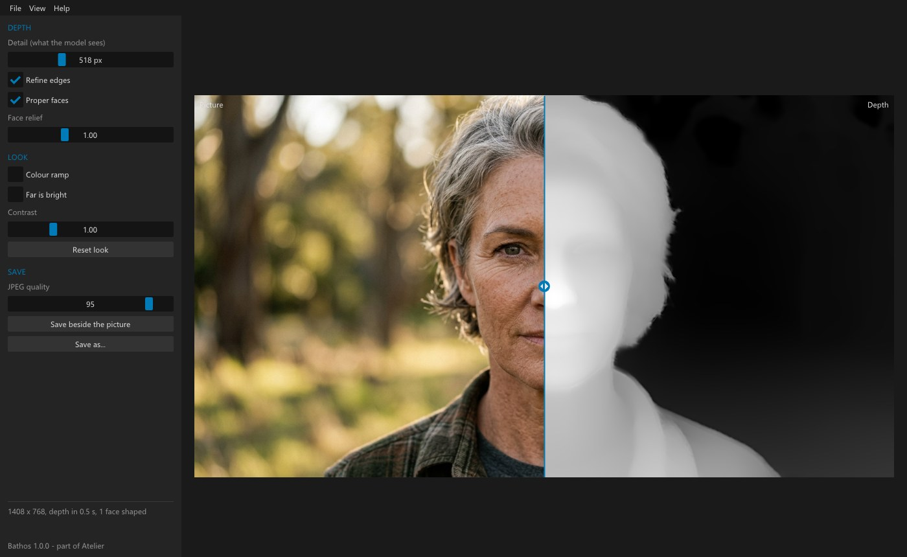
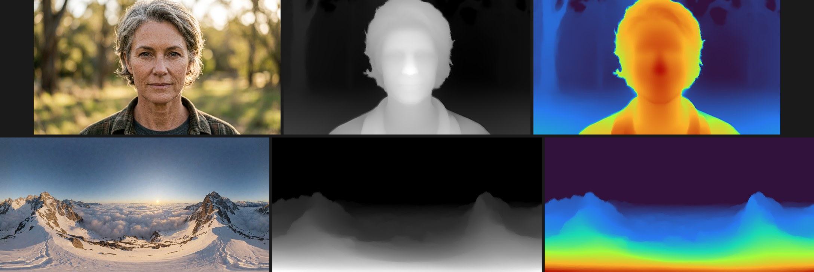

The command line
bathos-cli picture.jpg writes picture_depth.jpg beside it. Add --colour, --far-bright, --size 770, --face-relief 1.5 or -o depth.png. Drop pictures onto it, or onto the window, for a batch.
A picture in, its depth map out. Near is bright, far is dark. Part of Atelier.


bathos-cli picture.jpg writes picture_depth.jpg beside it. Add --colour, --far-bright, --size 770, --face-relief 1.5 or -o depth.png. Drop pictures onto it, or onto the window, for a batch.